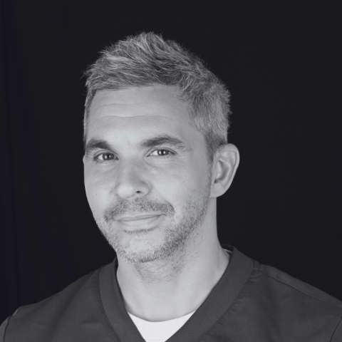

drfranckmoyal.fr · refonte · 12 octobre 2026
Trois directions pour l'accueil
Même contenu, même photographies, trois mises en forme. Les photographies sont les vôtres, affichées depuis le site en ligne. Rien n'est modifié sur le site.
- Aujourd'hui
- 104mots par écran
- Objectif
- 250mots par écran
- Page usures
- 13,4écrans de défilement
- Référence citée
- 5,4écrans, même longueur
- Titres par page
- 12,8contre 4 à 5
Comprendre pourquoi les dents s'usent, avant de les reconstruire
Exercice exclusif en dentisterie esthétique et adhésive, Paris 9e. Usures, érosion, composite et facettes — en préservant les tissus restants.
Ce que vous constatez
Cas traités au cabinet
Quatorze cas documentés, photographiés avant et après


Questions fréquentes
Non. Dans certaines situations, prévention, conseil et surveillance suffisent.
Non. Les usures sont le plus souvent multifactorielles : mécaniques, érosives, ou les deux.
Le composite ajoute de la matière sans tailler. La céramique demande une préparation, même minime.
Cela dépend de l'étendue. Le bilan le détermine avant tout engagement.
Le parti pris
Le registre d'un service hospitalier : grille serrée, chiffres visibles, rien de décoratif. On lit vite et on trouve.
Ce que ça sert
Votre autorité réelle — hôpital, enseignement, publications — devient visible dès le premier écran, en chiffres.
Le risque
Peu chaleureux pour un patient qui cherche d'abord à être rassuré sur son sourire.
Le travail avant le discours
Dentisterie esthétique et adhésive, Paris 9e. Quatorze cas photographiés, avant et après, sans retouche.
Les cas
Quatorze cas, photographiés sans retouche


La démarche
Comprendre avant de reconstruire
Des dents qui raccourcissent, s'aplatissent ou se fragilisent ne doivent pas simplement être réparées. Avant de reconstruire, il faut comprendre pourquoi elles s'usent.
Toutes les usures ne nécessitent pas une reconstruction : dans certaines situations, prévention, conseil et surveillance suffisent.
L'activité hospitalière à la Pitié-Salpêtrière et à la CMME de Sainte-Anne nourrit cette approche — diagnostic, prévention, coordination.
Le parti pris
La photographie porte la page. C'est le registre des cabinets d'esthétique les plus visités.
Ce que ça sert
Convainc en trois secondes. Vos sourires avant/après sont votre meilleur argument.
Le risque
Vos photos sont cliniques, pas publicitaires. En grand et sur fond noir, les vues avec écarteurs peuvent rebuter — il faudrait réserver celles-là aux pages de cas.
Dentisterie esthétique et adhésive — Paris 9e
Comprendre pourquoi les dents s'usent avant de les reconstruire
Des dents qui raccourcissent, s'aplatissent ou se fragilisent ne doivent pas simplement être « réparées ». Préserver les tissus restants, identifier la cause, puis reconstruire seulement lorsque c'est nécessaire.

Praticien hospitalier, Pitié-Salpêtrière depuis 2012 · CMME, Sainte-Anne, depuis 2024
Vous constatez
Un changement sur vos dents
Partez de ce que vous voyez, pas du nom du traitement.
On peut faire
Les traitements proposés
Du plus conservateur au plus engageant.
Commencer
Le bilan esthétique
Une séance pour comprendre l'état des dents, la cause de l'usure et les options — avant tout engagement.
Cas cliniques
Quatorze cas du cabinet, photographiés avant et après
Le praticien
Une pratique hospitalière qui nourrit le cabinet
Praticien hospitalier au service de Médecine Bucco-dentaire de la Pitié-Salpêtrière depuis 2012, où je suis responsable de la consultation des internes en dentisterie esthétique et usures. Praticien attaché à la CMME de l'hôpital Sainte-Anne depuis 2024, dans le champ des troubles des conduites alimentaires, et président de l'association DenTCA.
Parcours et publications · Activité hospitalière · Conférences et formations
Les questions qu'on me pose
Non. Dans certaines situations, prévention, conseil et surveillance suffisent. La décision dépend de la sévérité, de l'évolution et des conséquences fonctionnelles.
Non. Les usures sont le plus souvent multifactorielles : mécaniques, érosives, ou les deux à la fois.
Le composite ajoute de la matière sans tailler la dent. La céramique demande une préparation, même minime, mais vieillit différemment.
Oui, lorsque la cause est active. Reconstruire sur une érosion non maîtrisée expose à une récidive.
Le parti pris
Une revue clinique : titre fort, colonnes, photographies légendées. Dense sans être froid.
Ce que ça sert
Trois fois la densité actuelle, et la structure question → réponse que les IA extraient reste intacte.
Le risque
Proche de l'esprit actuel du site : si vous vouliez une rupture visible, c'est la moins rupture des trois.